这里要首先讲一下，就是不管教程的好坏，你如果看了不实践是没有意义的，对于一些不太理解的地方可以多尝试一下，这样你才能了解他到底是有什么样的功能，就像玩游戏一样，你得先知道这个技能是干什么的，才能在实际应用中更好的掌握它。下面我会从几个方面详细讲解：调色、磨皮、添加装饰、添加灯光照明。
PS人像修图指南调色1.1 白平衡1.2 曝光及明暗调整1.3 纹理和饱和度1.4 混色器1.5 色相饱和度和色彩平衡磨皮2.1 磨皮处理添加装饰3.1 找素材3.2 处理添加光效4.1 增加灯光的效果总结
因为前期你可以用其他软件进行基本简单的处理，所以照片导入到PS中后就优先调整它的色调。
第一个，先用下图的吸管吸取照片中没有颜色的部分（就是黑、白、灰），让照片的色彩还原为真实色彩。
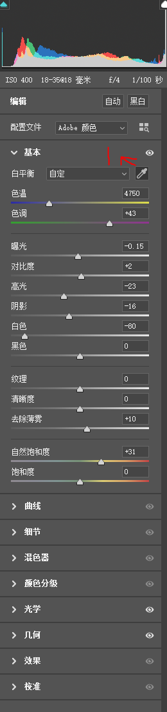
曝光：先看照片整体是偏暗还是偏亮，在进行曝光调整。 对比度：如果照片的明暗对比不强（意思就是照片看着像有一层薄膜）就需要调一下。 高光和阴影：调整的是照片明暗部分，高光下面的拖动条意思就是你调整照片高光的明暗，下面的阴影同理。 白色和黑色：和高光差不多，调整的是照片的白色部分和黑色部分。
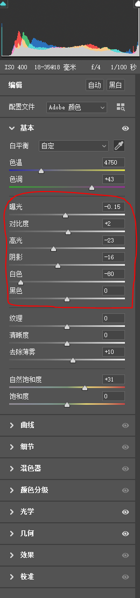
这部分我准备在后面讲，这里就不多说了。纹理、清晰度和去除薄雾就是让照片清晰，因为现在照相机配置都很好，所以这个功能会很少用到。
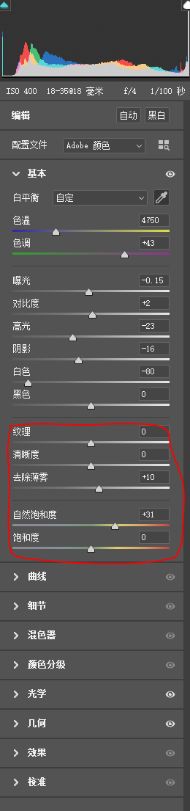
这里要讲讲混色器，这个还是比较重要，下面的调整旁边有个下拉条，一般我们调整HSL。
在下面有三个东西色相、饱和度、明亮度。
上面这三个也可以整体调整，后面我会讲到。
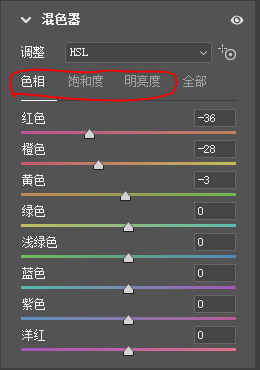
色相饱和度菜单（Ctrl+U）
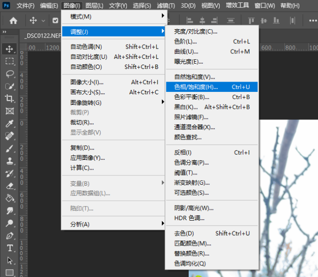
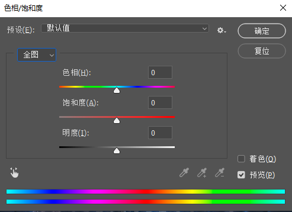
这个和上面的混色器有点类似，不过这个调整的是照片的整体，混色器调整的单个颜色。
色彩平衡菜单（Ctrl+B）
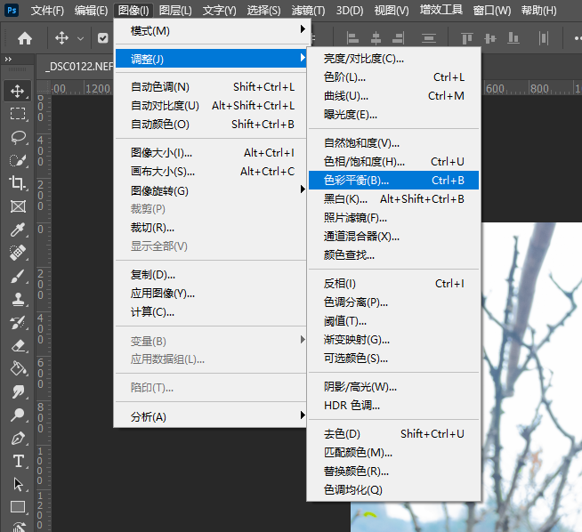
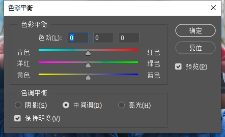
这个要着重讲一讲,你看他下面的色调平衡有三个选项，就是阴影、中间调、高光。这三个选择就是你想调整照片的那一部分。选好你要调整的那一部分后，就调整上面的色彩平衡，青色和蓝色加强就是你选择的部分呈现冷色，红色和黄色加强就是你选择的部分呈现暖色。调色部分基本就是这么多了。
实现原理步骤：
复制图层（ctrl+j）命名：美白层 ----在实际操作中尽量别碰到原始图层
混色器（菜单里面的滤镜可以再到Camera Row）里面调整橙色（皮肤色）的饱和度（降低）和明亮度（提高）
在复制一层美白层（命名：模糊层）图层在混色器里面降低纹理和清晰度，然后把美白层放在这层的上面
把最上层（美白层）的图层去色（顶部菜单栏---图像---调整---去色）shift+ctrl+U
保留照片的高反差（顶部菜单栏---滤镜---其他---高反差保留）里面有个拖动条，把它拿到稍微能看清眼睛、嘴巴、鼻子等五官就差不多了
把图层（美白层）模式改为亮光
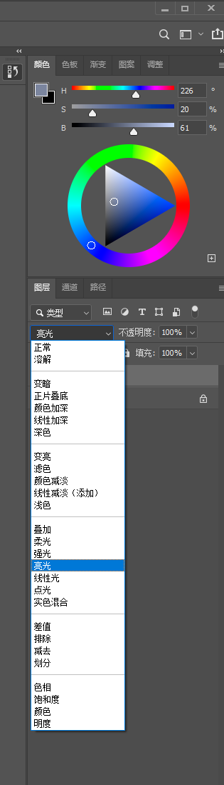
再复制一层背景图层，把它放到美白层和模糊成的中间，命名：调整层，用橡皮工具（就是左边的工具栏里面）擦除有痘印或者是想调整的地方（基本就是皮肤部分），注意：别擦到五官。
这里就是添加灵魂的一步了。
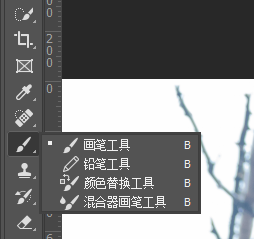
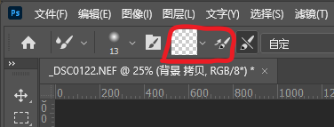
这里值得注意的是任何磨皮都是先模糊后清晰的这个逻辑顺序。
这里就是你在网上寻找你需要添加到照片里面的一些装饰元素。有几个我常用的网站你可以去看看。
素材下载完成后，就把它直接拖到PS里面的照片上面。
这里有几个步骤：
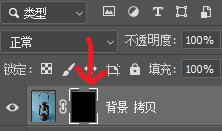
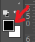
这里要讲一点，我会建立三个图层来调整，第一层调整光的核心点，第二层调整光的中间扩大部分，第三层调整散发区域
（这个键在方向键的上面）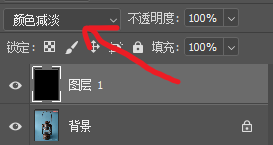
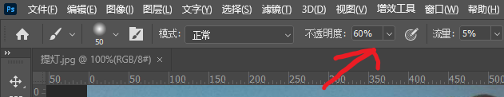
看看最后结果
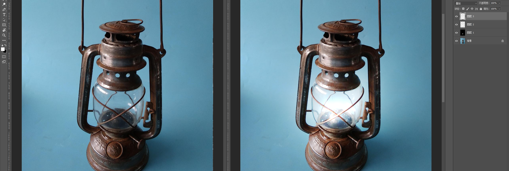
好了，到这里，你需要的基本技能都应该有了，不会的我你遇到新的问题的时候在问。
修图的意义在于让照片更加好看，更加符合大众的审美标准，因为每个人的审美标准不一样，所以只能符合大多数，也就是符合主流的审美标准。这本指南的目的也在于此，不会有过度精细的方式去处理照片，因为这主要是为我朋友旅拍修图写的。跟精细的处理方式比较适合高级商业人像，比如肖像、海报等等。
所谓审美，就是既能以整体性的眼光看事物，同时又能觉察到它的深度。大自然之美就在于它的整体性，而艺术与音乐之美则在于它的深度。 --------郑泉